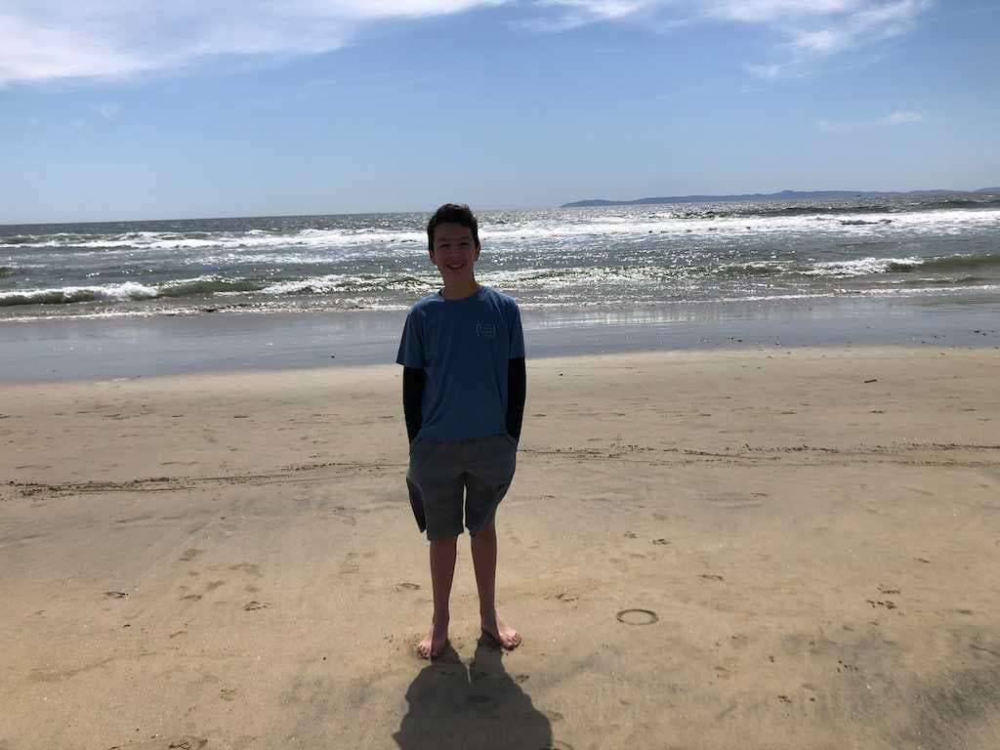
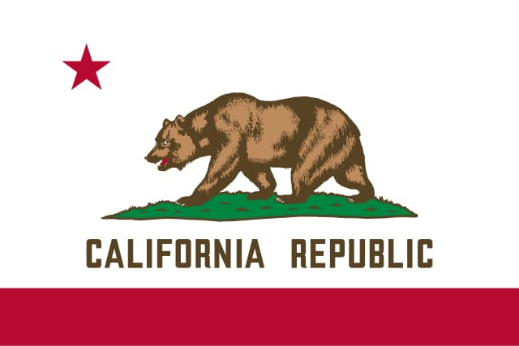

Brandon Arroyo
About Me

Greetings from Southern California! My name is Brandon. I love to play soccer whenever I can and go to the beach. My favorite music artists are Jack Johnson and Blink-182. I hope to transfer to BYU before I head off on a mission at the end of the summer. You can find me on the soccer field or relaxing at the beach.
California, United States of America

California is the most populated U.S. state, found on the West Coast and known for its incredible diversity of landscapes, from Pacific beaches and redwood forests to deserts and mountains like Mount Whitney, the highest point in the United States. California's nickname, the "Golden State," comes from the 1848 Gold Rush and today it hosts multiple national parks, including Yosemite and Death Valley.